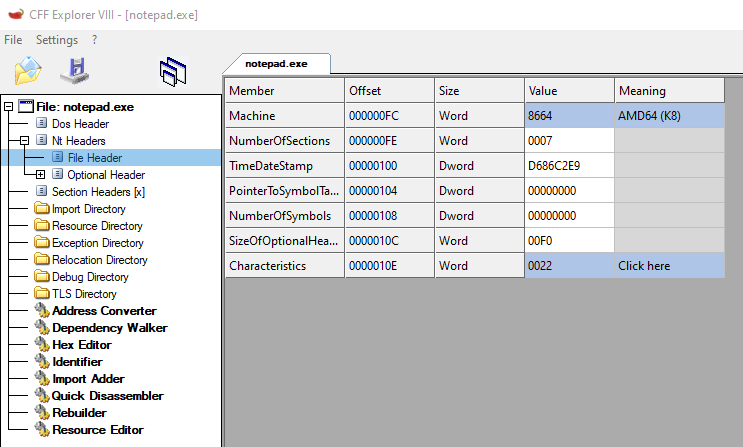

COFF Header
The COFF header contains info about the PE file: the computer architecture, the number of sections, time/date it was compiled, etc.
The Windows API refers to the COFF Header as
File HeaderHowever, the original PE format specification calls this the COFF header.
https://docs.microsoft.com/en-us/windows/win32/api/winnt/ns-winnt-image_file_headerPIMAGE_DOS_HEADER dos_header = NULL;
PIMAGE_NT_HEADERS pe_header = NULL;
PIMAGE_FILE_HEADER coff_header = NULL;
dos_header = file_buffer;
pe_header = (PIMAGE_NT_HEADERS)((DWORD_PTR)dos_header + (DWORD_PTR)dos_header->e_lfanew);
coff_header = &pe_header->FileHeader;
printf("COFF header @ 0x%p \n", &pe_header->FileHeader);
printf("\t computer arch 0x%x \n", pe_header->FileHeader.Machine);
printf("\t no. of sections: %d \n", pe_header->FileHeader.NumberOfSections);
printf("\t time created: %x \n", pe_header->FileHeader.TimeDateStamp);
### Values of Interest
Machine ◇ identifies the architecture of the computer
◇ 0x014c = x86 0x8664 = x64
NumberOfSections ◇ defines the number of sections in the binary